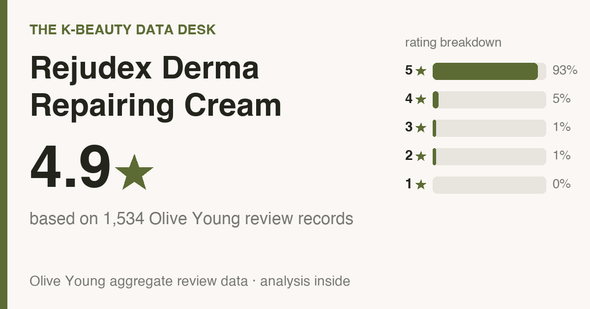
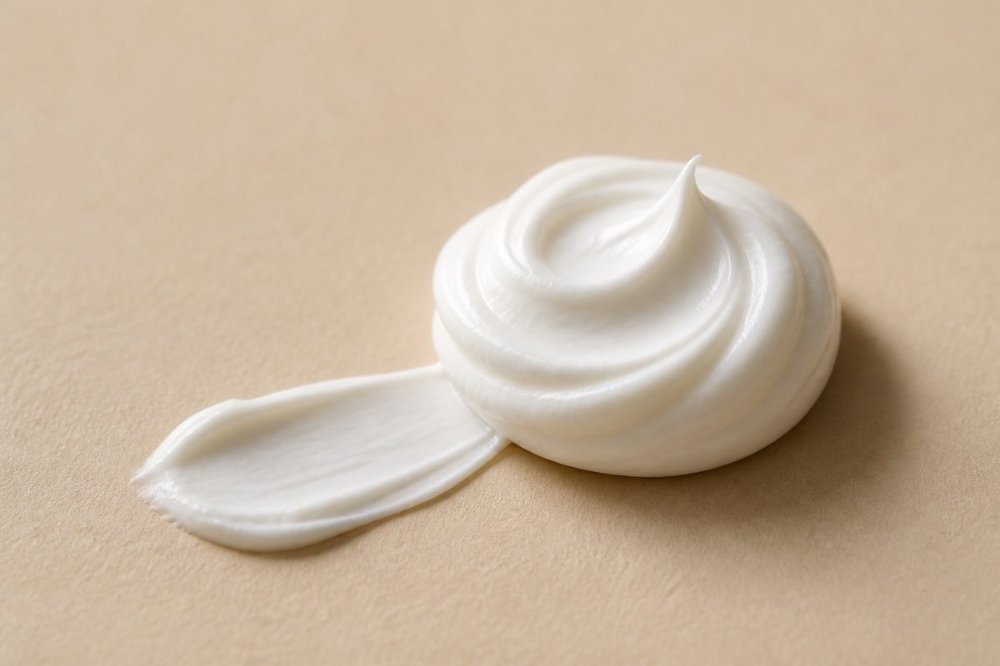
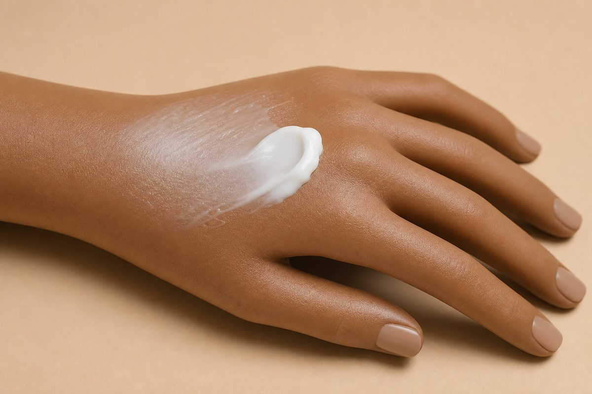

Data captured July 2026. This analysis uses 1,534 aggregate K-beauty retail ratings, plus anonymous theme counts from a capped sample of 500 helpful review records. The source data does not verify every buyer's identity, and no individual review text is reproduced or translated.
Store-link note: the shopping links below contain no affiliate tracking ID. No affiliate commission is currently earned from them.

The short version: It averages 4.9★ (93% of displayed ratings are five-star) across 1,534 K-beauty retail review records; the largest captured concern-poll shares include hydration (67%), soothing redness (33%). Dry has the largest share in the captured skin-type poll.

The Korea promo-pack listing price was ₩45,000 (≈ $33 at exchange rates) on a Korean K-beauty retail platform when I pulled the data (2026-07-26). The captured listing was a promo pack, so this amount can cover more than one item. That is a Korea price, not a quote for another market. Check the current regional listing, pack size, seller, and checkout total before comparing it with the dated figure. In the capped sample, 1% of records carried a repeat-purchase flag. This is metadata context only: it is not a buyer-wide repurchase rate, does not establish satisfaction or later purchase behavior, and is not used here to judge value or performance.
Rejudex Derma Repairing Cream appeared in the captured a Korean K-beauty retail platform ranking data. K-beauty retail is a Korean health-and-beauty retailer; this article analyzes its displayed aggregate ratings, polls, and capped anonymous topic counts. It does not reproduce individual reviews or treat ranking position as proof of product performance.
The average is 4.9 stars. 93% of displayed ratings are five-star (that's about 19 in 20), and 98% are four- or five-star. This distribution describes ratings, not verified outcomes or individual buyer identity.
The captured concern poll reports these response shares. They are preference/category signals, not efficacy tests:
Anonymous theme counts were computed from up to 500 of the most-helpful review records. These deeper numbers come from that capped sample; the star rating and any captured polls shown earlier come from the source's aggregate display. No individual review text is reproduced:
In the analyzer's topic counts for the capped 5-star subset, the recurring labels are soothing / redness, hydration & dewiness, fast absorption / fresh finish, and value & size. These are aggregate topic labels, not reproduced review text or verified outcomes.
67% selected the gentle response in the captured poll. A separate captured response put irritation at 0%. This is an aggregate perception signal, not a guarantee of individual tolerance or suitability for a skin condition.
The captured skin-type poll splits dry (67%), combination (33%); dry has the largest representation. This changes how representative the poll is for a reader, not whether the product works better for any skin type. Smaller groups carry more uncertainty in this dataset.
Factors that may make this dataset more useful to you:
Use extra caution with this dataset if:
A missing signal is not a negative product result. It means this captured dataset cannot answer that shopping question, so use these as comparison checks:
No complete ingredient list was captured, so fragrance and alcohol status are unknown. Check the current regional package or official label, including synonyms this parser may not recognize. If an ingredient matters because of a known allergy or skin condition, ask a qualified clinician; a rating cannot answer that question.
The snapshot does not include verified product directions, so this section does not invent an amount or schedule:

67% of the captured skin-type poll identified as dry, the largest group. That describes sample representation; it does not prove the product works better for that skin type.
67% selected the gentle response in the captured poll. That aggregate signal cannot predict individual tolerance or establish suitability for a skin condition.
Finish-related topic labels occur in the capped high-star subset, but the keyword counts do not preserve polarity or establish how the product will look on any skin tone. No verified amount or application direction was captured, so this analysis does not invent one.
The aggregate data cannot show that switching from a cream that already works will improve your result. Unless a verified feature here fills a specific gap, keeping what already works is reasonable.
The largest aggregate concern-poll share is hydration (67%). That is a preference signal, not an efficacy test. In the capped sample, 1% carried a repeat-purchase flag and 17% carried a month-plus-use flag. Those are metadata flags, not proof of causation or a buyer-wide re-buy rate.
The mixed signals support checking a trial size or return terms before committing. Use the dated rating and poll data as context, and do not infer an ingredient's dose or effectiveness from its label position.
No complete ingredient list was captured, so I can't confirm fragrance status. Check the current regional ingredient list rather than inferring it from ratings or the product name.
No made-up dupes here. Compare products in the same category using their current aggregate data and verified features, then compare price.
The links below search Amazon US and K-beauty retail's US storefront. Availability, seller, formula, price, shipping, and destination coverage can change, so verify the current listing and checkout terms.
The available signals are mixed, so check a trial size or return terms before committing rather than treating it as a staple. Dry has the largest captured skin-type poll share. Its strongest captured concern signals are hydration and soothing redness. Just know going in that the captured concern poll does not support treating it as a wrinkle or dark-spot product.
For context, 17% of the capped sample carried a month-plus-use flag. That records timing only; it does not prove continued satisfaction.
Not your match? Here are other posts built from the same scoped aggregate fields and explicit data limits:
Store-link note: the links below are ordinary search links; no affiliate tracking ID is configured.
If you're in the US:
Outside the US:
On prices: the captured price above is the dated Korean retail shelf figure (pulled 2026-07-26). Stores reprice and bundles can change the basis, so verify the current pack and checkout total.
← All K-Beauty Data Desk reviews · Best-seller rankings · About & methodology
Published by The K-Beauty Data Desk · Aggregate data captured 2026-07-26. The source data does not independently verify every buyer's identity. No individual review is reproduced or translated, and I did NOT test the product on my own skin. I received no free product and am not paid or approved by the brand.
Data basis: aggregate statistics from a Korean K-beauty retail platform, retrieved 2026-07-26. The ratings, review count, star distribution and satisfaction polls are all facts pulled in aggregate. The wording, decoding and recommendations are mine. No individual user review is copied or translated.